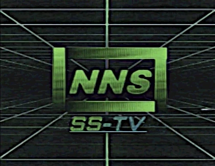

 who are we?
Back in the late summer of 1967, nico's news station was created by Thanks to the internet, we can now provide our news to a wider audience, and we are proud to continue our tradition of providing the latest news to the American people. |
|
our missionSince the creation of the network in 1967, our mission has been to deliver the latest news to the American people. We strive to provide the most accurate and up-to-date information on a variety of topics, including politics, sports, and entertainment. Our film crews work hard to bring the latest news straight to you using SS-TV technology. Thanks to your undying support and loyalty as viewers of the NNS network, we are able to keep America informed. |
© 1998 nicocorp inc.